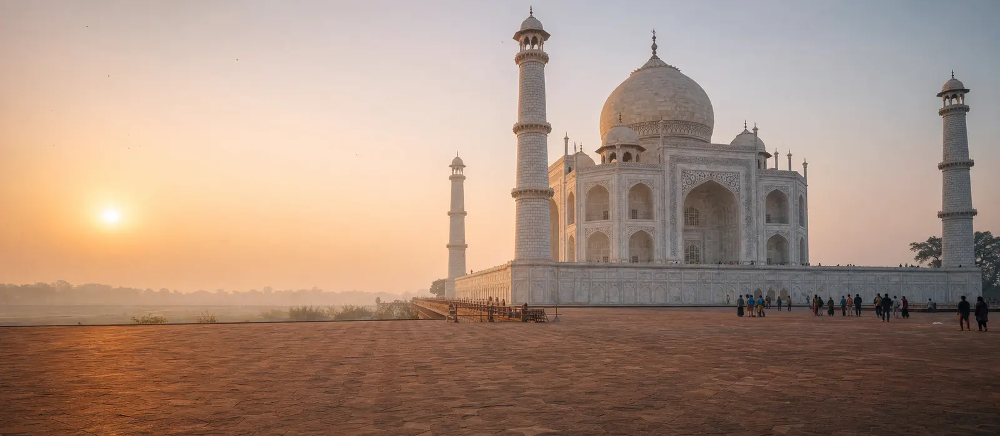
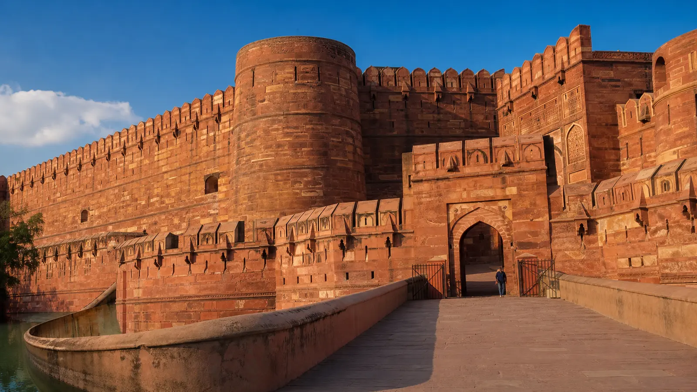
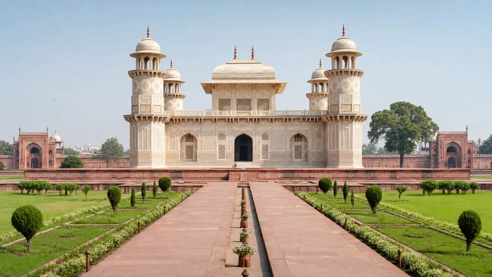
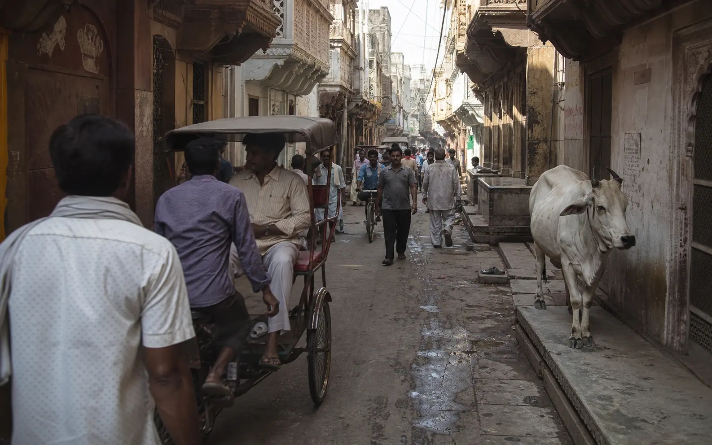
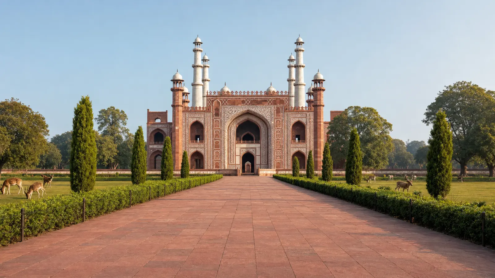

Stop 1 · SunriseTaj Mahal
Starting at sunrise means softer light on the marble, shorter queues and a cooler two hours than the middle of the day. The Taj is open sunrise to sunset every day except Friday.
Allow 2–2.5 hoursTaj Mahal · Agra Fort
Baby Taj · Sikandra · Mehtab Bagh

Agra’s monuments are spread across the city and the river, and the gaps between them are the awkward part of the day. With a private sightseeing cab, the same car and the same driver stay with you from the first stop to the last — your bags stay in the boot, the AC is running when you come back out into the heat, and there is no fare to negotiate at every gate.
8 HRS
Full-Day Package
80 KM
Included In A Full Day
6
Monuments & Stops Covered
SEDAN & SUV
Both Available
This is the order most travellers follow, and it is a suggestion rather than a fixed route. Skip a monument, spend longer at the Taj Mahal, start later, or swap the afternoon for shopping — the driver works to your plan.

Stop 1 · SunriseStarting at sunrise means softer light on the marble, shorter queues and a cooler two hours than the middle of the day. The Taj is open sunrise to sunset every day except Friday.
Allow 2–2.5 hours
Stop 2 · Mid-morningAbout 2.5 km from the Taj, so it is a short hop by car. Inside are the palaces and audience halls, and from Musamman Burj you get the distant view of the Taj across the river.
Allow 1.5 hours
Stop 3 · Late morningSmaller, quieter and often skipped by rushed tours. The pietra dura inlay here predates the Taj Mahal, and the riverside garden is a calm break from the crowds.
Allow 45 minutes
Stop 4 · MiddayA proper stop, not a rushed one. Tell the driver what you feel like — Mughlai, vegetarian or something simple near the next monument — and he will drop you and wait.
Allow 1 hour
Stop 5 · Early afternoonAbout 13 km out of the city centre, which is why it is worth having a car. The mausoleum mixes Hindu and Islamic architecture, and deer often graze in the surrounding gardens.
Allow 1 hourThe garden directly across the Yamuna from the Taj Mahal, and the best place to end the day — you see the same monument you started at, lit from the opposite side.
Allow 45 minutesAdding Sadar Bazaar. Many travellers finish at Sadar Bazaar for marble handicrafts, leather goods and Agra’s petha before being dropped at their hotel, the railway station or the airport. Say so when booking and the driver keeps the evening free for it.
About the hours. A sunrise-to-evening version of this itinerary runs longer than the 8 hours in the full-day package. Waiting during monument visits inside your booked hours is included; if the day runs past them, a small per-hour extension applies and we tell you that rate in writing before you confirm.
These are the standard packages. Every fare below covers the AC vehicle, fuel and driver charges, and is confirmed in writing on WhatsApp before you book.
| Package | Hours / Distance | AC Sedan | AC SUV | What It Covers |
|---|---|---|---|---|
| Half Day | 4 hrs / 40 km | ₹1,500 | ₹2,200 | Taj Mahal + Agra Fort |
| Full Day | 8 hrs / 80 km | ₹2,500 | ₹3,500 | All major Agra monuments |
| Full Day + Fatehpur Sikri | Full day | ₹3,500 | ₹4,500 | Agra monuments + Fatehpur Sikri |
| Airport Pickup + Sightseeing | Full day | ₹2,800 | ₹3,800 | Airport pickup, tour, hotel or station drop |
| Airport Transfer Only | One-way transfer | from ₹800 | from ₹1,200 | Kheria Airport pickup or drop |
AC vehicle • Fuel • Driver charges • Driver waiting at each monument within your booked hours
Monument entry tickets • Tolls • Parking • A guide inside the monuments, if you want one
Monument ticket prices are set by the Archaeological Survey of India and differ for Indian and foreign visitors, so they are not part of the cab fare. Our Taj Mahal visiting guide covers current ticket types and timings, and the full Agra taxi fare list shows our rates for every other route.
There is no pickup surcharge inside Agra — the driver comes to you, wherever you are staying or arriving.
Hotel Pickup
Agra Cantt Station
Agra Fort Station
Kheria Airport
Any Agra Address
Clear Fare Breakdown
One vehicle, one driver and one fare from your first pickup to your last drop.
Dzire or Amaze. The usual choice for a couple or a small family doing the standard monument circuit, with room for day bags in the boot.
Ertiga or Innova Crysta. Worth the difference if you are a larger family, travelling with checked luggage on a checkout day, or want more room between monuments.
For groups beyond seven we run a Tempo Traveller. It is not part of the standard package pricing above, so message us with your group size for a fare. See the full fleet and seating.
It opens sunrise to sunset every other day. On a Friday it closes to sightseeing visitors for prayers at the mosque inside the complex, so if your Agra day falls on a Friday we build the tour around Agra Fort, Sikandra, the Baby Taj and Mehtab Bagh instead. More detail in our Taj Mahal visiting guide.
Softer light on the marble, shorter entry queues, and you finish the hottest monument before the heat arrives. Our season-by-season guide covers which months this matters most in.
Entry tickets are not part of the cab fare and are priced separately for Indian and foreign visitors by the Archaeological Survey of India. The driver will drop you at the right ticket counter or gate for each site.
If you are leaving Agra the same evening, hand over your hotel room in the morning and keep your luggage in the car. You see the monuments through the day and get dropped at Agra Cantt or Kheria Airport afterwards.
Sikandra is around 13 km from the centre and Mehtab Bagh sits across the river. Doing that circuit by auto means renegotiating a fare at every stop.
Agra summers are hard work on foot. Between monuments you are back in an air-conditioned car rather than waiting in the sun for a ride.
Luggage stays in the boot all day, which is what makes a hotel checkout and an evening train realistic on the same day.
Spend an extra hour at the Taj, drop Sikandra, add Sadar Bazaar. Nothing is locked to a coach timetable or a fixed group.
The driver knows which gate and which car park works for each monument, and where to collect you when you come out.
You settle the fare on WhatsApp before the day starts, so there is no meter and no negotiation at any point during it.
Travel date, pickup point in Agra, number of passengers and which package you want.
AC sedan for up to four, AC SUV for up to six or seven, or a Tempo Traveller for a larger group.
We confirm the fixed fare on WhatsApp, along with any per-hour extension rate if you expect a long day.
Driver name, mobile number and car registration number are sent before pickup.
Your hotel, Agra Cantt, Agra Fort station, Kheria Airport or any address in the city.
The driver waits at each monument and moves when you are ready to move.
Nothing is locked in until you have the fare. No app to download, and no advance payment for most bookings.
Local Agra Operator
Padma Shree Travels operates from Shamsabad, Agra, running local sightseeing, station and airport transfers and outstation trips. You can also extend your day to Fatehpur Sikri, Mathura or Vrindavan.
Direct WhatsApp and phone support before and during your day.
.jpg)
A full day is ₹2,500 in an AC sedan and ₹3,500 in an AC SUV, covering 8 hours and 80 km. A half day covering the Taj Mahal and Agra Fort is ₹1,500 in a sedan and ₹2,200 in an SUV, covering 4 hours and 40 km. The fare includes the AC vehicle, fuel and driver charges. Monument entry tickets, tolls and parking are paid separately.
The full-day tour covers the Taj Mahal, Agra Fort, the Tomb of Itimad-ud-Daulah (Baby Taj), Akbar’s Tomb at Sikandra, Mehtab Bagh and Sadar Bazaar. The order is a suggestion, and you can skip monuments or spend longer at any of them.
No. The fare covers the AC vehicle, fuel and driver charges only. Monument entry tickets, tolls and parking are paid separately by you. Ticket prices differ for Indian and foreign visitors and are set by the Archaeological Survey of India, not by us.
The Taj Mahal is open from sunrise to sunset every day except Friday, when it closes to sightseeing visitors for prayers at the mosque inside the complex. If your Agra day falls on a Friday we can reorder the tour around the other monuments, which stay open.
A sunrise start is the usual choice. The light on the marble is at its best, the queues are shortest and you avoid the middle of the day in summer. Tell us your preferred pickup time on WhatsApp and the driver reaches you accordingly.
Waiting during monument visits within your booked hours is included. If the day runs past the booked hours or kilometres, a small per-hour extension applies, and we tell you that rate in writing on WhatsApp before you confirm the booking.
Yes. The Full Day plus Fatehpur Sikri package is ₹3,500 in an AC sedan and ₹4,500 in an AC SUV. Fatehpur Sikri is about 40 km from Agra on the Jaipur highway, so it combines naturally with a sightseeing day.
Yes. We pick up from any address in Agra, including hotels across the city, Agra Cantt railway station, Agra Fort railway station and Kheria Airport. An airport pickup combined with a full sightseeing day is ₹2,800 in a sedan and ₹3,800 in an SUV.
Yes. Your bags stay in the boot between monuments, which is what makes a checkout-day tour practical: you can hand over your hotel room in the morning, see Agra, and be dropped at the station or airport in the evening.
The driver stays with the vehicle and handles the driving, parking and timings between sites, not commentary inside the monuments. If you want a guide inside the monuments, ask us when booking and we can arrange an ASI-approved guide separately, at additional cost.
Yes. We pick you up from Agra Cantt railway station or Kheria Airport, cover the sightseeing, and drop you back in time for your return train or flight. Tell us your arrival and departure times on WhatsApp so the day can be planned around them.
Send your travel date, pickup point, passenger count and preferred package on WhatsApp, and we confirm the fixed fare in writing before you book. Your driver’s name, mobile number and car registration number are shared before pickup. No app is needed and no advance payment is required for most bookings.
Just the Taj Mahal and Agra Fort, on flexible timing rather than a full circuit.
From ₹1,500 half dayEarly pickup built specifically around the sunrise slot at the Taj.
From ₹1,500 half dayAkbar’s UNESCO-listed capital, 40 km from Agra on the Jaipur road.
From ₹2,500Kheria Airport pickup or drop, on its own or combined with a sightseeing day.
From ₹800Agra Cantt and Agra Fort station transfers for arrivals and departures.
From ₹800A second-day pilgrimage trip from Agra covering both towns.
From ₹3,000 full dayOnward drop to Jaipur when Agra is a stop on a longer route.
Fare on WhatsAppEvery route and package we run, with fares in one place.
All faresA longer written itinerary with timings, tickets and practical notes.
Travel GuideGet your fare before you book.
Send your travel date, pickup point in Agra, how many passengers and which package you want — plus anything you would like to add or skip.
Free cancellation up to 12 hours before departure.